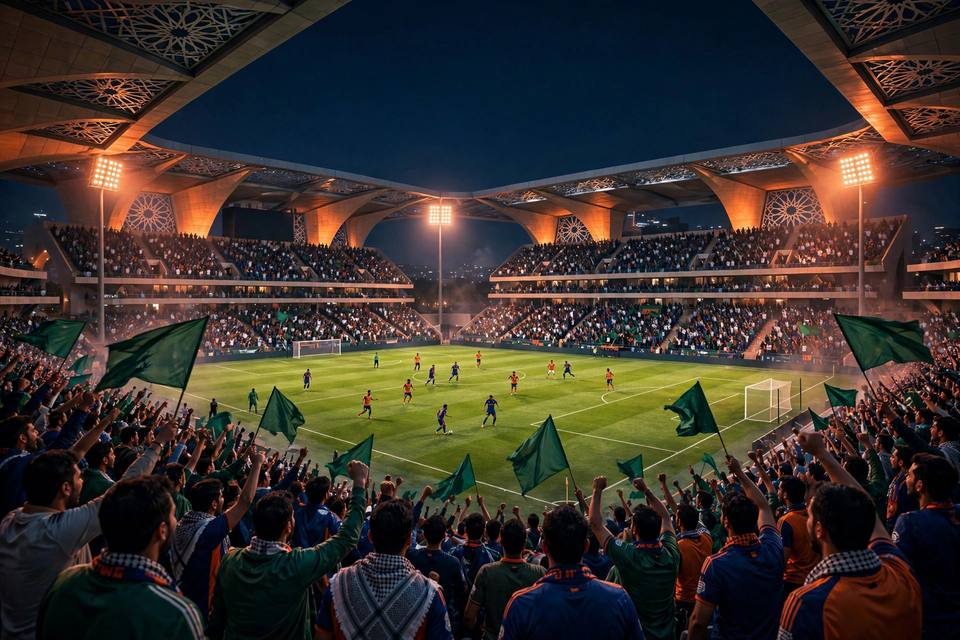
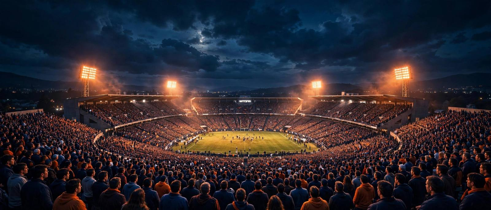
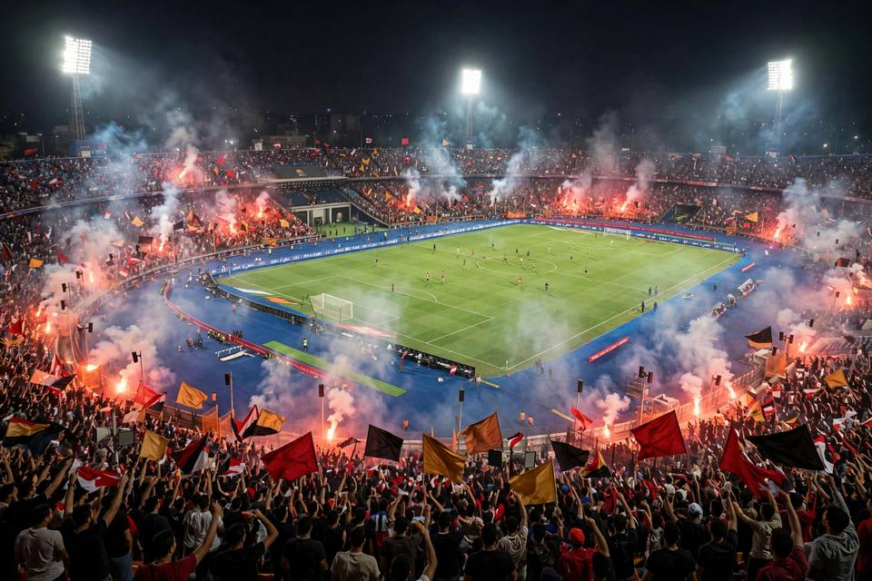
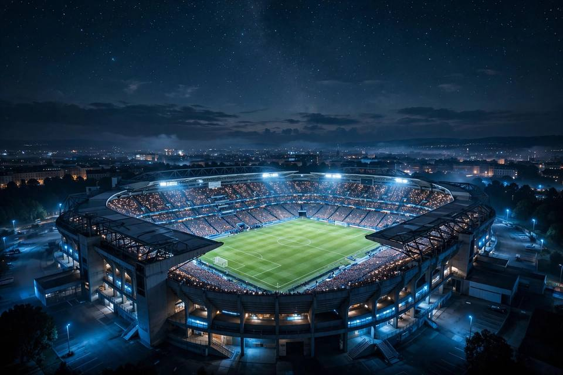

الدوري السعوديليالي روشن: كيف غيّر الدوري السعودي خريطة الكرة العربية؟
النجوم العالميون والملاعب الجديدة وصراع الهلال والنصر والاتحاد والأهلي على القمة — قراءة في الموسم الجديد.

جدول مباريات اليوم محدّث باستمرار: المواعيد بتوقيت السعودية، القنوات الناقلة الرسمية، الملاعب، وآخر أخبار الدوريات العربية والعالمية — كل ذلك في مكان واحد.

الدوري السعوديالنجوم العالميون والملاعب الجديدة وصراع الهلال والنصر والاتحاد والأهلي على القمة — قراءة في الموسم الجديد.

الدوري المصريمواعيد القمة والسياق التاريخي لأعرق ديربي عربي، وكيف تتابع أخبار الديربي ضمن جدول مباريات اليوم.

دوري الأبطالشرح مبسط للصيغة الموسعة وعدد المباريات، وكيف تتابع مواجهات الأبطال أولاً بأول.
صُمم هذا الموقع ليختصر عليك عناء البحث: تفتح الصفحة الرئيسية فتجد مباريات اليوم مرتبة حسب البطولة، وتبويبات واضحة لمباريات الأمس والغد، وبطاقة لكل مباراة تعرض الفريقين والموعد والقناة الناقلة الرسمية والملعب. كل المواعيد بتوقيت السعودية (GMT+3) ما لم يُذكر خلاف ذلك.
سواء كنت تتابع قمة الهلال والاتحاد في الدوري السعودي، أو ديربي القاهرة، أو ليالي دوري الأبطال الأوروبية — ستجد كل ما تحتاجه لتنظيم مشاهدتك في مكان واحد.
يضع جدول المباريات بين يديك أهم بطولات الموسم: الدوري السعودي بكل قممه المنتظرة، والدوري المصري بديربي القاهرة الشهير، إلى جانب الدوريات الأوروبية الخمسة الكبرى ودوري أبطال أوروبا بنظامه الجديد الموسّع. كل بطولة تحظى ببطاقات مباريات تعرض الموعد والقناة الناقلة والملعب، لتخطط مشاهدتك دون أن يفوتك أي لقاء مهم.
ومع اقتراب كأس العالم 2026، ستجد هنا أيضاً دليلاً محدثاً لمباريات المنتخبات العربية ومواعيدها. تابع قسم الأخبار باستمرار لتحليلات ما قبل المباريات الكبرى وخلاصات لأبرز ما يحدث في الملاعب، وكل ذلك بلغة عربية واضحة وتجربة تصفح سريعة لا تستهلك بيانات هاتفك.
جميع المواعيد في الموقع بتوقيت السعودية (GMT+3) افتراضياً، وتظهر أسفل اسمي الفريقين في كل بطاقة مباراة مع اسم البطولة والقناة الناقلة.
لا. تصفح جدول المباريات والأخبار مجاني تماماً ولا يتطلب إنشاء حساب أو تسجيل الدخول.
نغطي الدوري السعودي والدوري المصري والدوريات الأوروبية الكبرى (الإنجليزي، الإسباني، الإيطالي، الألماني، الفرنسي) ودوري أبطال أوروبا وكأس العالم.
اضغط زر «تفاصيل المباراة» في بطاقتها، وستظهر لك القناة الناقلة الرسمية والملعب والموعد. راجع أيضاً صفحة القنوات الناقلة لدليل شامل.
الموقع دليل للمواعيد والأخبار والقنوات الرسمية، ولا يستضيف أي بثوث. نرشدك دائماً إلى القنوات الناقلة الرسمية لمتابعة المباريات قانونياً.